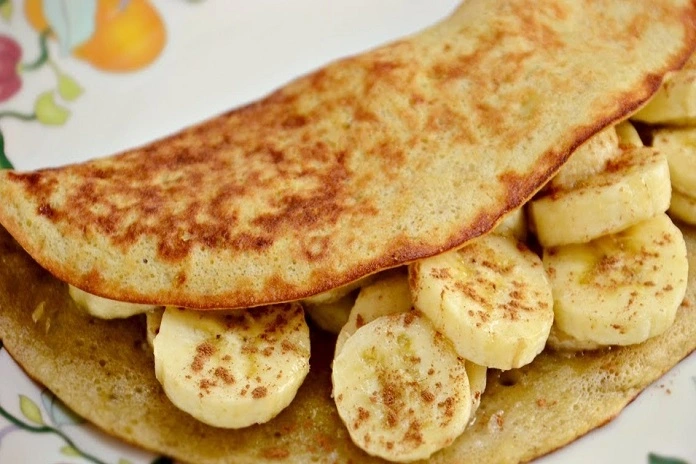

Banana Pancake

Description
A variation from usual pancake recipes, this banana pancake is healthy and gluten-free! The pancake uses tapioca
flour (originated from the cassava plant) and oat as it's main batter ingredient, making the use of wheat flour unnecessary.
Ingredients
- 1 large banana (or alternatively 2 small bananas)
- 1 table spoon of tapioca starch / tapioca flour
- 2 table spoons of oat flakes
- 2 whole eggs
- 1 tea spoon of vanilla extract
Steps
- In a bowl, mash the banana with a fork until smooth.
- Mix in the tapioca and oat flakes.
- Add the eggs and vanilla extract and whisk until a smooth batter forms.
- Pour the batter into a non-stick preheated skillet and cook until the under side is golden brown.
- Flip the pancake and reach golden brown color on the other side.
- You are ready to serve!
Cooking tip: serve the pancake folded in half with banana slices or peanut butter.